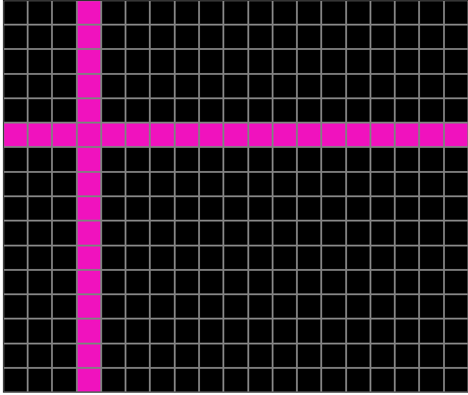
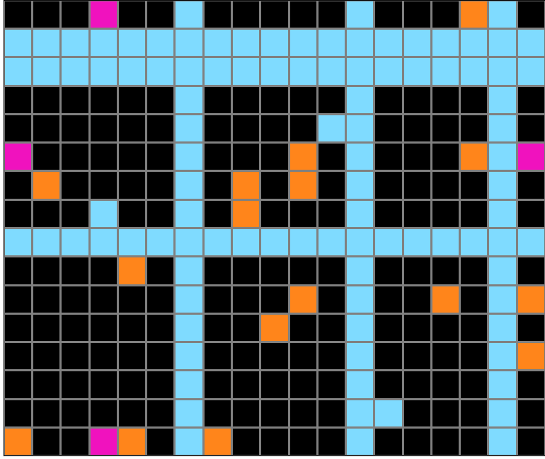
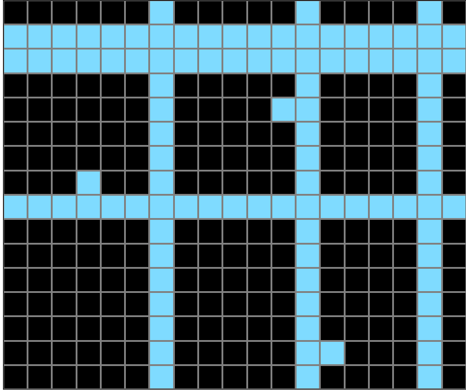
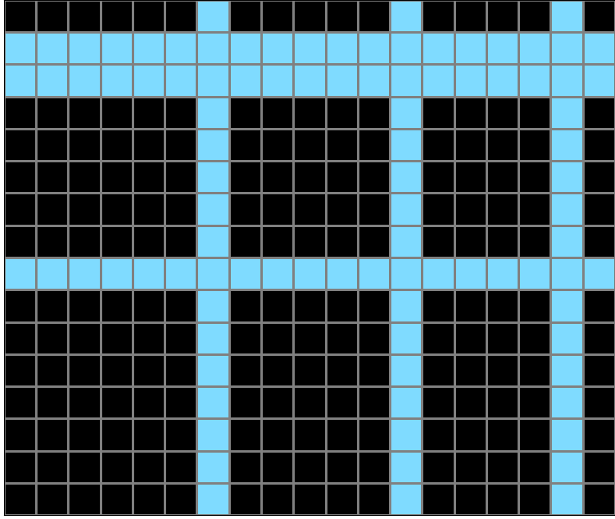
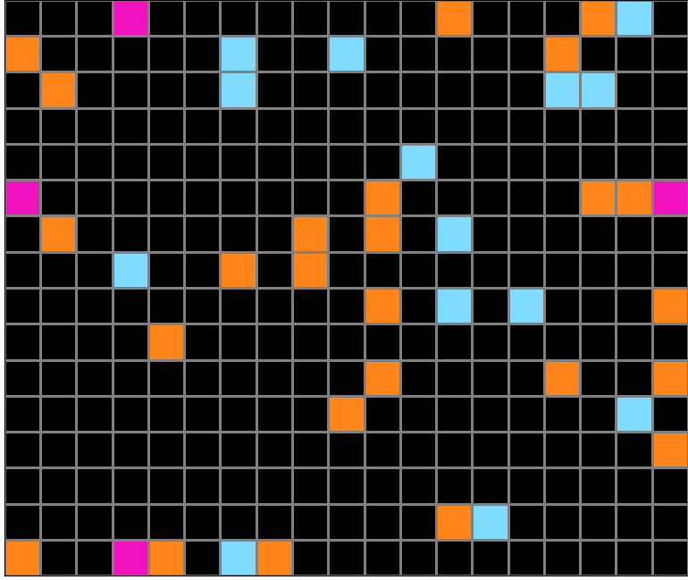
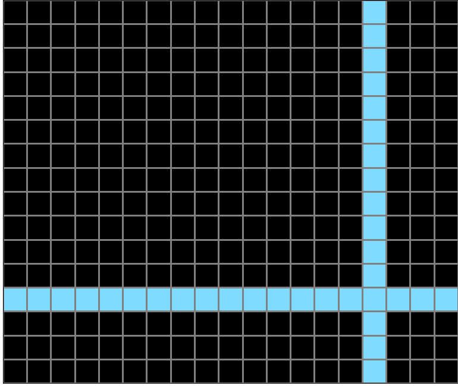
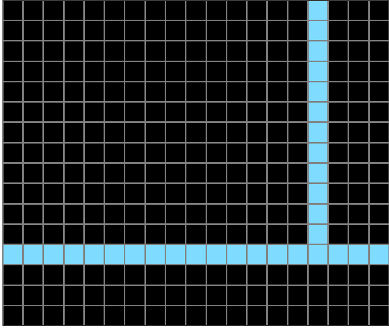

Participant 1
Initial description: Of the colored cells present, find the color with only four cells on the edges of the grid. Get rid of all the other colored cells. Connect the cells in the same row and/or the ones in the same column with the same color.
Final description: Of the colored cells present, find the color with only four cells on the edges of the grid. Get rid of all the other colored cells. Connect the cells in the same row and/or the ones in the same column with the same color.

Participant 2
Initial description: I had to find matching color squares, on opposite ends of the output area, and connect them
Final description: I had to find matching color squares, on opposite ends of the output area, and connect them

Participant 3
Initial description: Copy the input. If green squares exist, connect 2 or more into a straight line either horizontally or vertically, then replace everything else with black. Otherwise, if red squares exist, connect 2 or more into a straight line horizontally, then replace everything else with black. Otherwise, if blue squares exist, connect 2 or more into lines horizontally or vertically, then replace everything else with black.
Final description: Copy the input. If green squares exist, connect 2 or more into a straight line either horizontally or vertically, then replace everything else with black. Otherwise, if red squares exist, connect 2 or more into a straight line horizontally, then replace everything else with black. Otherwise, if blue squares exist, connect 2 or more into lines horizontally or vertically, then replace everything else with black.



Participant 4
Initial description: The input color with the fewest squares are anchor points out of which extend squares to connect to the other square across the grid, either vertically or horizontally.
Final description: The input color with the fewest squares are anchor points out of which extend squares to connect to the other square across the grid, either vertically or horizontally.

Participant 5
Initial description: To start, the grid remains the same size in the output as in the input. There will be one color of non-black blocks that there are 4 blocks of. In this case that is the pink. Each line that is drawn must extend from border to border either horizontally or vertically. The four blocks are each on one of the four edges. The next step is to find the first pink block from the left, and extend that through a second pink block on the same plane, respecting that each of the pink blocks is on an edge of the grid. In this case the first two blocks are horizontal. Next, you find the next pink block that wasn't used in the first line, and extend a pink line through it and the last pink block, either vertically or horizontally, so long as the two pink blocks used lie on the border of the grid. In this case it is a vertical line.
Final description: To start, the grid remains the same size in the output as in the input. There will be one color of non-black blocks that there are 4 blocks of. In this case that is the pink. Each line that is drawn must extend from border to border either horizontally or vertically. The four blocks are each on one of the four edges. The next step is to find the first pink block from the left, and extend that through a second pink block on the same plane, respecting that each of the pink blocks is on an edge of the grid. In this case the first two blocks are horizontal. Next, you find the next pink block that wasn't used in the first line, and extend a pink line through it and the last pink block, either vertically or horizontally, so long as the two pink blocks used lie on the border of the grid. In this case it is a vertical line.

Participant 6
Initial description: The color with four outer squares connects each square to the adjacent one with a bar.
Final description: The color with four outer squares connects each square to the adjacent one with a bar.

Participant 7
Initial description: The color with the least amount of dots, 4 dots, are used to form either vertical or horizontal lines (sometimes 2 horizontal lines or 2 vertical lines). The 2 lines are formed with 2 dots each. The lines formed should go from one side of the grid to the other and being in the same color.
Final description: The color with the least amount of dots, 4 dots, are used to form either vertical or horizontal lines (sometimes 2 horizontal lines or 2 vertical lines). The 2 lines are formed with 2 dots each. The lines formed should go from one side of the grid to the other and being in the same color.

Participant 8
Initial description: I aimed to provide a clear and concise answer to the question, without adding any unnecessary details or opinions.
Final description: I aimed to provide a clear and concise answer to the question



Participant 9
Initial description: I think the rule is to find the 4 individual squares that are the same color, and make a straight line horizontally and vertically wwith these squares, intersecting each other. Then fill in all other squares besides these lines into black.
Final description: I think the rule is to find the 4 individual squares that are the same color, and make a straight line horizontally and vertically wwith these squares, intersecting each other. Then fill in all other squares besides these lines into black.